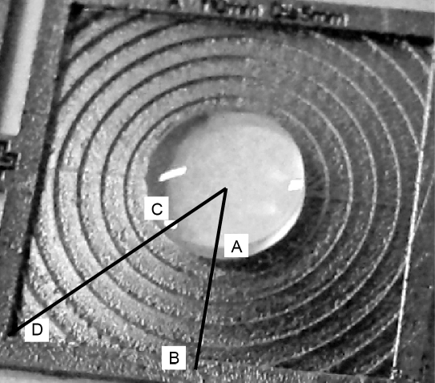
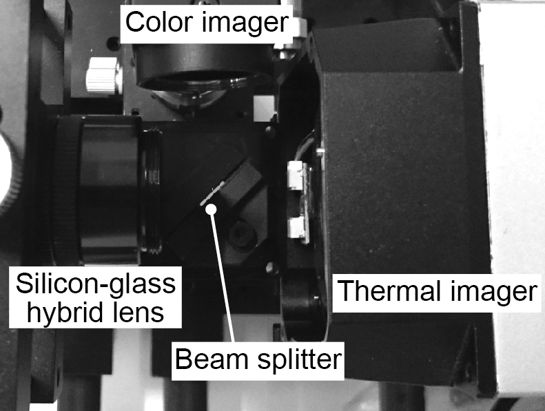
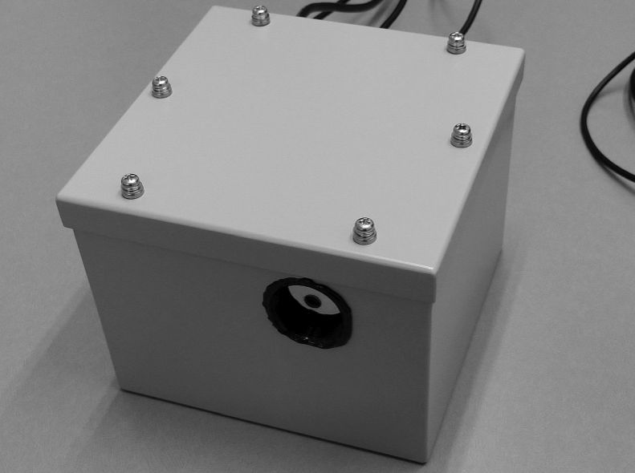
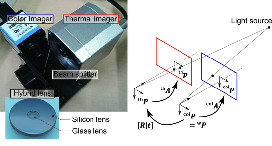

Coaxial imaging system with concentric silicon–glass hybrid lens
A silicon–glass hybrid lens for simultaneous color-and-thermal imaging
We show that color and thermal images from the same viewpoint and of the same view angle can be taken using a silicon-glass hybrid lens that focuses visible and long-wavelength infrared (LWIR) light. The lens was fabricated using silicon three-dimensional fabrication process. Color and thermal images were taken with the hybrid lens. The maximum and mean differences of the color and thermal image displacements were 0.42 mm and 0.26 mm, respectively. The maximum and mean values of the differences in angle were 2.0° and 1.2°, respectively.
Publications
- Tomoyuki Takahata, Kiyoshi Matsumoto, and Isao Shimoyama, “A silicon-glass hybrid lens for simultaneous color-and-thermal imaging,” The 17th International Conference on Solid-State Sensors, Actuators and Microsystems (Transducers 2013 & Eurosensors XXVII), pp. 1408-1411, Barcelona, Spain, 16–20 June, 2013. [Proceedings]
Compact coaxial thermal and color imaging system with silicon-glass hybrid lens
Detecting human is one of the most important functions of service robots assisting human lives. Thermal images are useful to detect human. Since the number of pixels of the thermal imagers is smaller than that of color imagers, thermal images get more useful combined with corresponding color images. In this paper, we propose a compact optical system to obtain both thermal and color images simultaneously. The key is to use a silicon-glass hybrid lens, with which long-wavelength infrared (LWIR) and visible light can be focused. The focused light was split by a silicon plate. The thermal and color images were taken by a thermal and color imager, respectively. We experimentally showed that the focal plane was tuned by the position of the lens keeping the correspondence of thermal and color images.
Publications
- Tomoyuki Takahata, Kiyoshi Matsumoto, and Isao Shimoyama, “Coaxial imaging system for thermal and color images using a silicon-glass hybrid lens,” The 33rd annual conference of the Robotics Society of Japan (RSJ2015), 1H1-01, 2015. (Japanese domestic conference)
- Tomoyuki Takahata, Kiyoshi Matsumoto, and Isao Shimoyama, “Coaxial imaging system capable of capturing thermal and color images from the same viewpoint,” the 22nd Symposium on Sensing via Image Information (SSII2016), 2015. (Japanese domestic conference)
- Tomoyuki Takahata, Kiyoshi Matsumoto, and Isao Shimoyama, “Compact coaxial thermal and color imaging system with silicon-glass hybrid lens,” IEEE International Conference on Robotics and Automation (ICRA2016), Stockholm, Sweden, 16–21 May, 2016. [Proceedings]
- Tomoyuki Takahata and Isao Shimoyama, “Implementation and evaluation of visible and far-infrared coaxial imaging systems,” The 35th annual conference of the Robotics Society of Japan (RSJ2017), 3C3-01, 2017. (Japanese domestic conference)
Splashproof coaxial camera
This study shows how to implement a visible and long-wavelength infrared light coaxial imaging system that captures color and temperature images in the same field of view with splashproof performance. Although there have been studies of coaxial imaging systems that are dustproof, they are not splashproof and may be damaged when exposed to water drops in the rain.
Publications
- Tomoyuki Takahata and Isao Shimoyama, “Splash-proof visible and far-infrared light coaxial imaging system,” The 36th annual conference of the Robotics Society of Japan (RSJ2019), 3J3-04, 2018. (Japanese domestic conference)
Coaxiality evaluation
Thermal imaging is useful for tasks such as detecting the presence of humans and recognizing surrounding objects in the operation of several types of robots, including service robots and personal mobility robots, which assist humans. Because the number of pixels on a thermal imager is generally smaller than that on a color imager, thermal images are more useful when combined with color images, assuming that the correspondence between points in the images captured by the two sensors is known. In the literature, several types of coaxial imaging systems have been reported that can capture thermal and color images, simultaneously, from the same point of view with the same optical axis. Among them, a coaxial imaging system using a concentric silicon–glass hybrid lens was devised. Long-wavelength infrared and visible light was focused using the hybrid lens. The focused light was subsequently split using a silicon plate. Separate thermal and color images were then captured using thermal and color imagers, respectively. However, a coaxiality evaluation of the hybrid lens has not been shown. This report proposes an implementation and coaxiality evaluation for a compact coaxial imaging system incorporating the hybrid lens. The coaxiality of the system was experimentally demonstrated by estimating the intrinsic and extrinsic parameters of the thermal and color imagers and performing 2D mapping between the thermal images and color images.
Publications
- Tomoyuki Takahata, “Coaxiality evaluation of coaxial imaging system with concentric silicon–glass hybrid lens for thermal and color imaging,” Sensors, vol. 20, no. 20, article no. 5753 (19 pages), 2020. [Paper] (Published on 10 October 2020)